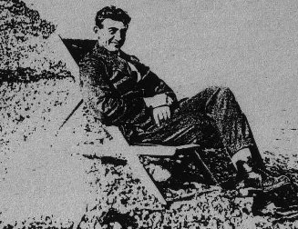

Tuesday, April the 13th, 2004
back to: title, date or indexes

Dobson's various pamphlets about Claude Sopwith contained no illustrations. We have tracked down this rare photograph and include it here as an adjunct to the above item. Snapped by his docent while relaxing in what looks like a deckchair, Sopwith seems unaware that a patch of ectoplasm has materialised just below his right elbow—an incident which Dobson chose to ignore, or one he never addressed in writing.